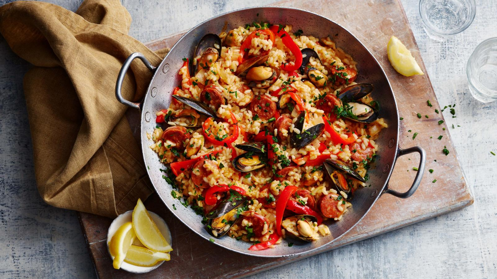

Chicken and chorizo Paella

Description
This chicken and chorizo paella is a hearty sharing dish that's easy to cook and serve in one dish. Using chorizo in your paella might not be the done thing everywhere, but if you like it, go with it!
Ingredients
- 1–2 tbsp oil
- 12 whole chicken pieces (legs or thighs), on the bone
- 1 large onion, finely chopped
- 3 garlic cloves, crushed
- 1 chorizo sausage, sliced into 3mm/⅛in thick slices
- 2 red peppers, seeds removed, sliced
- 2–3 red chillies, seeds removed, chopped
- 2 tsp smoked paprika
- 1.5 litres/2½ pints chicken stock
- 400g/14oz paella rice
- 12 mussels or clams, (optional) cleaned, open and damaged shells discarded
- handful parsley, roughly chopped
Cooking Instructions
- Preheat the oven to 180C/160C Fan/Gas 4.
- Heat the oil in a large, lidded, heatproof pan or paella pan. Fry the chicken until the pieces are evenly browned, turning them regularly as they cook. You may need to do this in two batches, depending on the size of your pan. Remove the chicken from the pan and set aside.
- Fry the slices of chorizo in the pan until crisp. They will release their juices into the pan, which adds a lot of flavour to the dish. Add the onion to the pan, and cook gently until soft, then add the garlic and fry for a further 2–3 minutes. Add the red peppers, chillies and smoked paprika, cook for another 2–3 minutes. Return the chicken pieces to the pan and pour in the stock. Simmer gently for 20–25 minutes until the chicken is tender.
- Add the rice to the pan, cover with the lid and put into the preheated oven. Cook for 30 minutes, or until all the liquid has been absorbed and the rice is cooked. Alternatively, if using a paella pan which won’t fit in the oven, cover tightly with foil and continue cooking on the stove over a low heat for the same cooking time. If using mussels or clams, add them to the pan for the final 20 minutes cooking time. Discard any shells that remain closed after cooking. Check the chicken is cooked by piercing the thickest part of a piece with a skewer – if the juices run clear the chicken is cooked.
- Sprinkle with parsley before bringing the pan to the table. Let your guests help themselves.